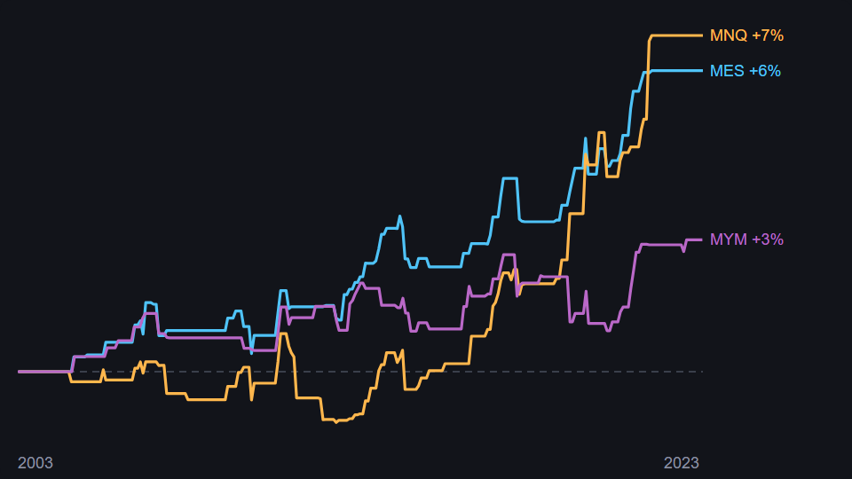

Sharp drop rebound
This buys a pullback while the market is above its 200-day average. US stock indices have drifted upward over the long run, helped by growth, inflation and monetary policy, and that drift is what a dip-buying strategy leans on. The trend filter keeps it out of a market that is falling for months.
MES (Micro E-mini S&P 500): 72 trades, net 6.5%, profit factor 1.94, win rate 73.6%, max drawdown 1.6%, grade A.
MNQ (Micro E-mini Nasdaq-100): 76 trades, net 7.2%, profit factor 1.82, win rate 77.6%, max drawdown 2.3%, grade D.
MYM (Micro E-mini Dow): 60 trades, net 2.8%, profit factor 1.4, win rate 66.7%, max drawdown 2.0%, grade D.
It was run by the app's own strategy tester on daily bars of the three micro index futures, starting from $100,000, risking 1% of the account on each trade, with 0.01% of each trade's value in costs and a 10% margin. No slippage is taken off. Tested periods: MES 2003-07-13 to 2023-07-11; MNQ 2003-07-13 to 2023-07-11; MYM 2003-07-06 to 2023-07-06. Micro contracts began trading in 2019, so the years before that are not the micro contracts’ own prices. The picture shows the account curve of each market in percent of the starting balance.

A
- Trades
- 72
- Net
- +6.5%
- Profit factor
- 1.94
- Win rate
- 73.60%
- Max drawdown
- 1.60%
- Tested
- 13 Jul 2003 to 11 Jul 2023
Hypothetical backtest, not actual trading. Past results don’t predict future ones. Not financial advice.
Rules
- Daily bars. Trade only when the close is above its 200-day average.
- Buy at the next day's open after a day that falls more than 1.5 ATR from the day before.
- Sell at the next day's open after the first close above the 5-day average, or after 10 days.
- Stop: 4 ATR below the close of the signal day. Size: 1% of the account at risk, never less than the market's smallest order.